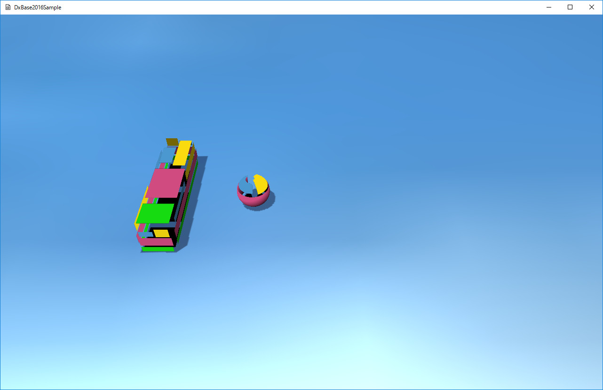

図6001a
右側の球体が左の直方体（OBB）に近づいてきます。やがて2つは衝突し、球体が逆に移動します。
//更新
void MoveSphere::OnUpdate(){
//行き過ぎた場合の対応
if (m_Posision.x > m_StartPosision.x){
m_Posision = m_StartPosision;
m_Velocity.x = -1.0f;
}
float ElapsedTime = App::GetApp()->GetElapsedTime();
auto Span = m_Velocity * ElapsedTime;
m_Posision += Span;
//Boxを取得
auto BoxPtr = GetStage()->GetSharedGameObject<Box>(L"Box");
auto BoxMat = BoxPtr->GetComponent<TransformMatrix>()->GetWorldMatrix();
OBB BoxObb(Vector3(1.0f, 1.0f, 1.0f), BoxMat);
SPHERE Sp(m_Posision, m_Scale.x / 2.0f);
Vector3 RetVec;
if (HitTest::SPHERE_OBB(Sp, BoxObb, RetVec)){
//衝突した
m_Velocity.x = 1.0f;
}
auto PtrTransformMatrix = GetComponent<TransformMatrix>();
Matrix4X4 mat;
mat.DefTransformation(
m_Scale,
Vector3(0.0f, 0.0f, 0.0f),
m_Posision
);
PtrTransformMatrix->SetWorldMatrix(mat);
}
struct SPHERE : public CollisionVolume
{
Vector3 m_Center; //中心点の座標
float m_Radius; //半径
SPHERE(){}
SPHERE(const Vector3& Center,float Radius):
m_Center(Center),
m_Radius(Radius){}
bool operator==(const SPHERE& other)const{
return ((m_Center == other.m_Center) && (m_Radius == other.m_Radius));
}
};
struct OBB : public CollisionVolume{
Vector3 m_Center; //中心点の座標
Vector3 m_Rot[3]; //XYZ の各座標軸の傾きを表す方向ベクトル
Vector3 m_Size; //OBB の各座標軸に沿った長さの半分（中心点から面までの長さ）
OBB(){
//デフォルトは1辺1.0のOBB
Vector3 SizeVec(1.0f,1.0f,1.0f);
//行列はアイデンティティ
Matrix4X4 Matrix;
CreateOBB(SizeVec,Matrix);
}
//作成されたサイズと変換行列から、OBBを得る
OBB(const Vector3& Size,const Matrix4X4& Matrix)
{
m_Center.x = Matrix._41;
m_Center.y = Matrix._42;
m_Center.z = Matrix._43;
Vector3 VecX(Matrix._11,Matrix._12,Matrix._13);
Vector3 VecY(Matrix._21,Matrix._22,Matrix._23);
Vector3 VecZ(Matrix._31,Matrix._32,Matrix._33);
m_Size = Vector3(
Size.x * VecX.Length(),
Size.y * VecY.Length(),
Size.z * VecZ.Length()
);
m_Size *= 0.5f;
//回転を得る
m_Rot[0] = Vector3EX::Normalize(VecX);
m_Rot[1] = Vector3EX::Normalize(VecY);
m_Rot[2] = Vector3EX::Normalize(VecZ);
}
//中略
};
struct OBB : public CollisionVolume{
Vector3 m_Center; //中心点の座標
Vector3 m_Rot[3]; //XYZ の各座標軸の傾きを表す方向ベクトル
Vector3 m_Size; //OBB の各座標軸に沿った長さの半分（中心点から面までの長さ）
};
struct XMFLOAT4X4
{
union
{
struct
{
float _11, _12, _13, _14;
float _21, _22, _23, _24;
float _31, _32, _33, _34;
float _41, _42, _43, _44;
};
float m[4][4];
};
//中略
};
X軸スケール = Vector3EX::Length(Vector3(_11, _12, _13)); Y軸スケール = Vector3EX::Length(Vector3(_21, _22, _23)); Z軸スケール = Vector3EX::Length(Vector3(_31, _32, _33));
ローカルX軸の回転結果 = Vector3EX::Normalize(Vector3(_11, _12, _13)); ローカルY軸の回転結果 = Vector3EX::Normalize(Vector3(_21, _22, _23)); ローカルZ軸の回転結果 = Vector3EX::Normalize(Vector3(_31, _32, _33));
//作成されたサイズと変換行列から、OBBを得る
OBB(const Vector3& Size,const Matrix4X4& Matrix)
{
m_Center.x = Matrix._41;
m_Center.y = Matrix._42;
m_Center.z = Matrix._43;
Vector3 VecX(Matrix._11,Matrix._12,Matrix._13);
Vector3 VecY(Matrix._21,Matrix._22,Matrix._23);
Vector3 VecZ(Matrix._31,Matrix._32,Matrix._33);
m_Size = Vector3(
Size.x * VecX.Length(),
Size.y * VecY.Length(),
Size.z * VecZ.Length()
);
m_Size *= 0.5f;
//回転を得る
m_Rot[0] = Vector3EX::Normalize(VecX);
m_Rot[1] = Vector3EX::Normalize(VecY);
m_Rot[2] = Vector3EX::Normalize(VecZ);
}
void MoveSphere::OnUpdate(){
//行き過ぎた場合の対応
if (m_Posision.x > m_StartPosision.x){
m_Posision = m_StartPosision;
m_Velocity.x = -50.0f;
}
//中略
}